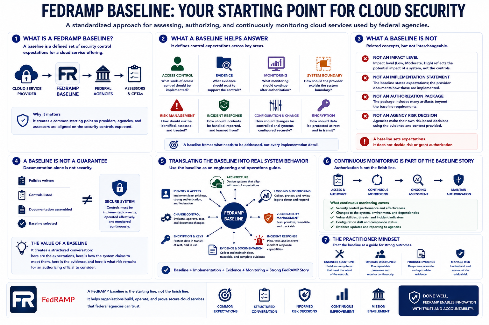

What a FedRAMP Baseline Means
Connecting to LMS... Progress: in progress

Narration
FedRAMP is a standardized federal approach for assessing, authorizing, and continuously monitoring cloud services used by federal agencies. A FedRAMP baseline is one of the main ways that approach becomes practical. It gives cloud providers, agencies, and assessors a common starting point for the security controls expected for a cloud service offering. It does not describe every implementation detail, but it frames what needs to be addressed.
Think of a baseline as a defined set of security control expectations. It helps answer questions such as: what kinds of access control should be implemented, what evidence should exist, what monitoring should continue after authorization, and how the provider should explain the system boundary. The baseline is not the same thing as an impact level, an implementation statement, an authorization package, or an agency risk decision. Those ideas connect, but they are not interchangeable.
A baseline also does not guarantee security by itself. A provider can list controls, write policies, and assemble documentation while still operating a weak system if the controls are not implemented and monitored effectively. The value of a baseline is that it creates a structured conversation: here are the expectations, here is how the system claims to meet them, here is the evidence, and here is what risk remains for an authorizing official to consider.
For practitioners, the key habit is to treat the baseline as an engineering and operations guide, not a paperwork label. It should influence architecture, identity design, logging, vulnerability management, incident response, change control, encryption decisions, evidence collection, and continuous monitoring. A strong FedRAMP story begins when the baseline is translated into real system behavior.